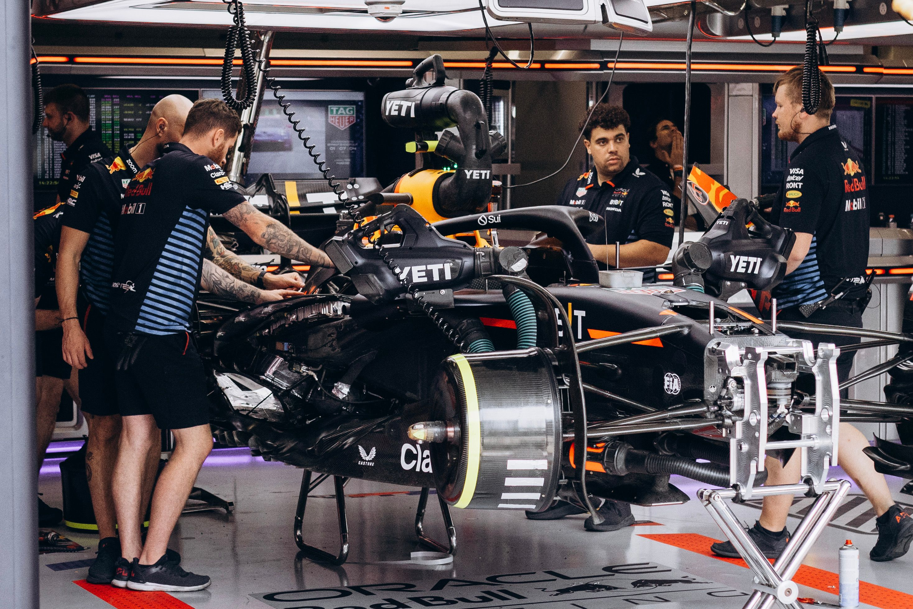

Mengenal Tim di Balik Formula 1

Peran Tim dalam Formula 1
Setiap tim Formula 1 bertanggung jawab dalam mengembangkan dan mempersiapkan mobil yang digunakan selama kompetisi. Tim harus memastikan mobil memiliki performa yang baik, mulai dari kecepatan, aerodinamika, hingga sistem keselamatan. Selain itu, tim juga bertugas menyusun strategi agar pembalap dapat menghadapi setiap balapan dengan baik.
Pembagian Tugas dalam Tim
Dalam sebuah tim Formula 1, terdapat banyak orang yang memiliki tugas berbeda-beda. Pembalap bertugas mengendarai mobil dan berusaha mendapatkan posisi terbaik saat balapan. Mekanik bertanggung jawab memeriksa serta memperbaiki bagian mobil, sedangkan insinyur bertugas menganalisis performa mobil agar dapat bekerja dengan maksimal.
Selain itu, terdapat ahli strategi yang bertugas menentukan keputusan penting selama balapan, seperti waktu yang tepat untuk mengganti ban dan strategi menghadapi kondisi lintasan. Setiap anggota memiliki tanggung jawab masing-masing sehingga kerja sama menjadi hal yang sangat penting.
Persiapan Sebelum Balapan
Sebelum balapan dimulai, setiap tim melakukan berbagai persiapan untuk memastikan mobil berada dalam kondisi terbaik. Persiapan tersebut meliputi pemeriksaan mesin, ban, sistem pengereman, dan komponen lainnya. Tim juga mempelajari karakteristik sirkuit yang akan digunakan agar dapat menentukan pengaturan mobil yang sesuai.
Selain mempersiapkan kendaraan, tim juga menyusun strategi berdasarkan kondisi lintasan dan perkiraan cuaca. Persiapan yang matang dapat membantu pembalap menghadapi berbagai situasi selama kompetisi berlangsung.
Tim-Tim Terkenal dalam Formula 1
Formula 1 memiliki sejumlah tim yang dikenal karena prestasi dan sejarah panjangnya dalam dunia balap. Beberapa di antaranya adalah Scuderia Ferrari, McLaren, Mercedes, dan Red Bull Racing. Tim-tim tersebut memiliki karakteristik, teknologi, serta pencapaian yang berbeda dalam kompetisi Formula 1.
Setiap tim berusaha mengembangkan mobil dan meningkatkan kemampuan para pembalapnya agar mampu bersaing dengan tim lainnya. Persaingan tersebut membuat setiap musim Formula 1 selalu menghadirkan berbagai pertandingan yang menarik.
Kerja Sama Selama Balapan
Kerja sama tim tetap menjadi hal penting ketika balapan berlangsung. Pembalap harus terus berkomunikasi dengan tim melalui radio untuk mendapatkan informasi mengenai kondisi mobil, posisi lawan, dan strategi yang perlu dilakukan. Informasi tersebut membantu pembalap mengambil keputusan selama berada di lintasan.
Salah satu contoh kerja sama yang terlihat jelas adalah ketika melakukan pit stop. Pada saat pit stop, para mekanik bekerja dengan cepat untuk mengganti ban dan melakukan pemeriksaan tertentu pada mobil. Proses ini membutuhkan koordinasi yang baik karena waktu yang digunakan dapat memengaruhi posisi pembalap dalam balapan.
Persaingan Antar Tim
Persaingan antar tim merupakan salah satu bagian menarik dalam Formula 1. Setiap tim berusaha memperoleh hasil terbaik melalui pengembangan teknologi mobil, kemampuan pembalap, dan strategi yang tepat. Keberhasilan sebuah tim tidak hanya ditentukan oleh kecepatan mobil, tetapi juga oleh kemampuan seluruh anggota dalam bekerja sama.
Dalam setiap musim, tim-tim Formula 1 bersaing untuk mengumpulkan poin dan meraih gelar juara konstruktor. Persaingan ini mendorong setiap tim untuk terus melakukan inovasi dan meningkatkan kualitasnya agar dapat menjadi yang terbaik di antara para pesaing.